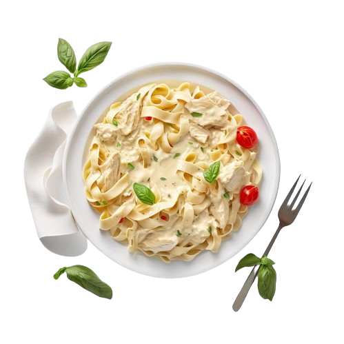

Especial do Chefe
Cremosidade
a cada mordida
Massa fresca tipo fettuccine com molho especial de manteiga, queijo parmesão Grana Padano, tomate-cereja e manjericão fresco.

Massa fresca tipo fettuccine com molho especial de manteiga, queijo parmesão Grana Padano, tomate-cereja e manjericão fresco.